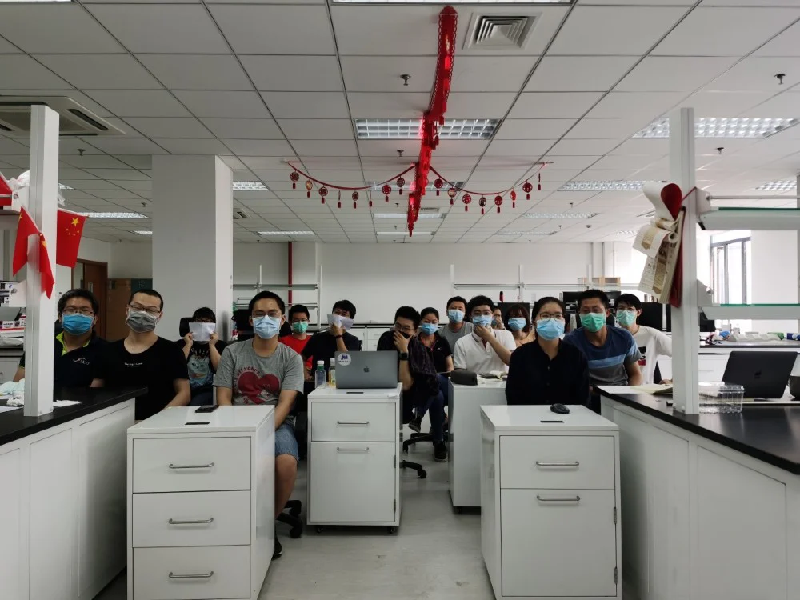
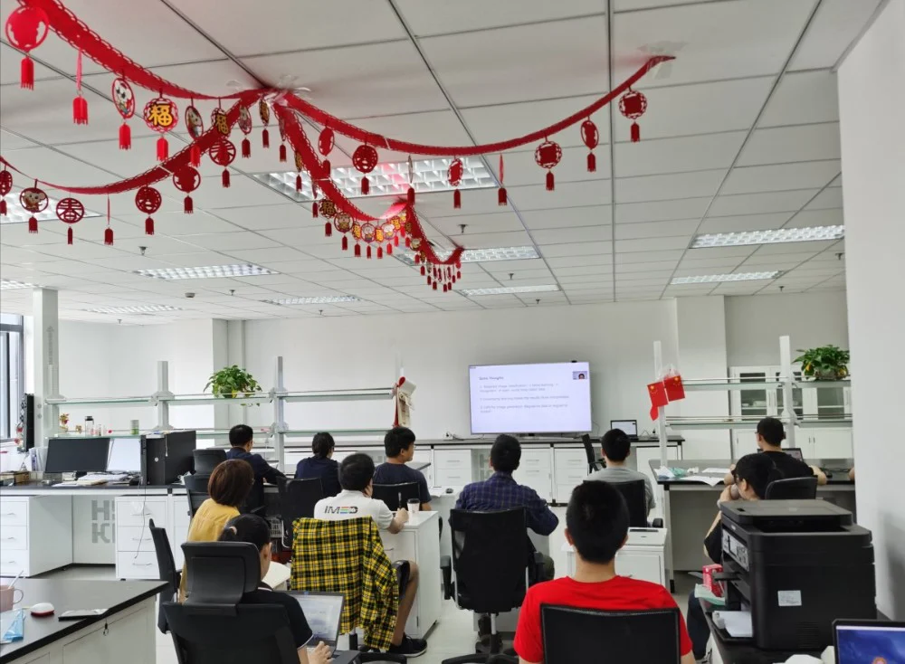

2020年5月14日-5月15日，由imed深圳团队主办、imed宁波协办的第二届国际智能精准医疗学术研讨会（ipmed）如期举行。在特殊情况下，大会灵活地采取了线上分享的方式依旧光彩夺目。本次会议所邀请分享工作的专家学者都与imed颇有渊源，他们都在各自的工作岗位中取得了很高的成绩，借着ipmed的机会分享自己的心得，同与会的老师和同学们互相沟通，交流思想，只为了壮大imed中国团队这一个共同的目标。
会议开场由本次会议的主办人、imed创始人、imed一代的领军者、imed宁波团队首席科学家刘江教授主持。首先，刘江教授就Imed发展历程总结出一个起源，两个基地，三个联合实验室，四个研究方向，五个研究团队，六字文化，在此基础上指出了IMED目前的局限性并铺开了团队未来研究发展布局，启发每位成员群策群力如何以“科学化”思维发展团队。研讨会秉承小而精，专而实的办会思想，为来自新加坡、美国、日本等国外以及国内的专家学者提供分享交流的平台。
在研讨会中，Imed宁波团队方面首先由imed宁波负责人赵一天研究员给出讲座，作为imed二代的代表者，赵一天研究员回顾了过去一年imed宁波团队的工作，包括科研成果和项目成果，并对现阶段宁波团队的人员组成、重点项目申请、眼科多模态图像分析相关科研方向和成果做出了总结。
Imed宁波团队智能硬件方向负责人杨建龙研究员介绍了深度学习在OCT计算成像中的应用，提出将先进的数字计算算法与简单的成像设备相结合，在保证成像质量的同时，减低成像设备的价格并提高设备的灵活性。
苏攀博士后针对医学图像存在的标注不确定性问题，提出了深度学习与模糊积分结合的方法解决标注不一致性问题，为多标注医学图像问题提供了参考，也为提高深度学习中医学图像的泛化性能拓宽了思路。
谢建洋作为imed第三代的代表介绍了视网膜拓扑分析以及动静脉分类的相关工作，并就OCT-A的血管分类做了详细介绍，分析了目前所用方法的优势以及存在的问题，并提出了解决方案。
马煜辉作为成长中的imed第三代，2019级的在读博士生，代表imed宁波团队的学生介绍了自己现阶段的工作。他提出了一种用于医学图像增强的生成对抗网络架构CSI-GAN，是基于CycleGAN，在目标函数中引入了光照正则项和结构损失项，用于改善增强图像的光照均匀性和结构完整性，在角膜神经共聚焦显微镜图像和内窥镜图像上均取得了整体最佳增强性能。
第二届ipmed在两天时间中，共开展了26个精彩的报告及讲座，深入探讨了人工智能技术在医疗健康科研及产业中的发展和应用，促进了学科间交流合作和学术创新，imed宁波团队的学生受益良多。


imed宁波全员集结